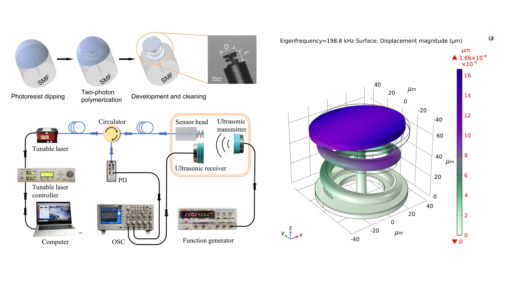

About
I am currently conducting research on optical fiber humidity sensors, Fabry–Perot interferometric microcavities, and breath monitoring. My research focuses on fiber-optic sensing, humidity-responsive materials, optical microcavity devices, and biomedical sensing applications.
Interests
- Optical Fiber Sensors
- Fabry–Perot Interferometric Microcavities
- Humidity Sensing and Breath Monitoring
- Optical Microcavity Devices
- Photonic Integrated Devices
Education
Shenzhen University
- M.Eng. in Optical Engineering
- Sep. 2021 - Jun. 2024
- Advisor: Prof. Bo Dong
Your Undergraduate University
- B.Eng. in Your Major
- Sep. 2017 - Jun. 2021
Experiences
Research Assistant
Laboratory of Photonic Integrated Devices and Systems
Working on optical fiber humidity sensors, Fabry–Perot microcavities, humidity-sensitive films, and breath monitoring applications.
Master Student
Shenzhen University
Conducted research on optical fiber sensing devices and humidity-responsive optical microcavity structures.
Publications

GitHub
senpengzhang
Personal GitHub profile. Research-related code and projects will be updated here.
Selected Honors & Awards
Academic Services
- Reviewer experience, if any.
- Teaching assistant experience, if any.
- Academic conference or laboratory service, if any.